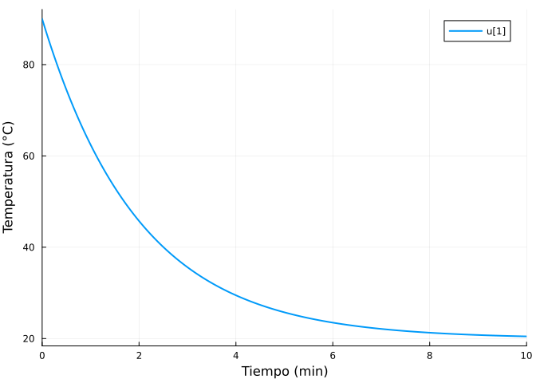
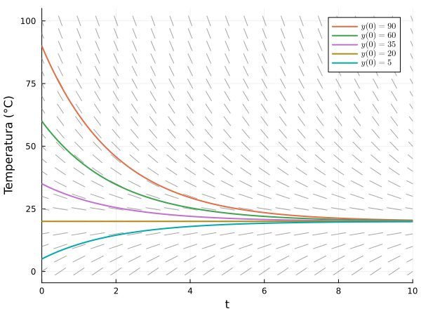
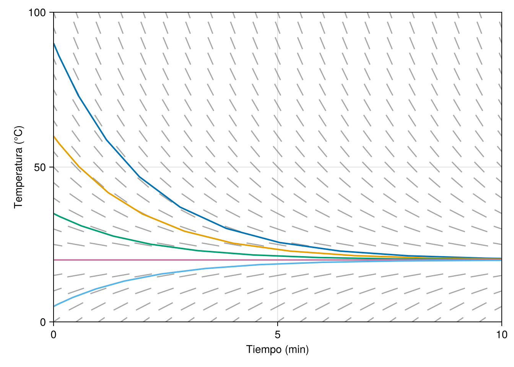
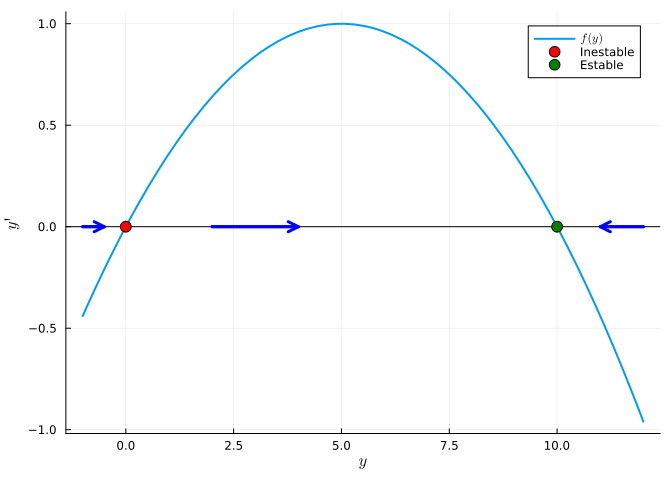
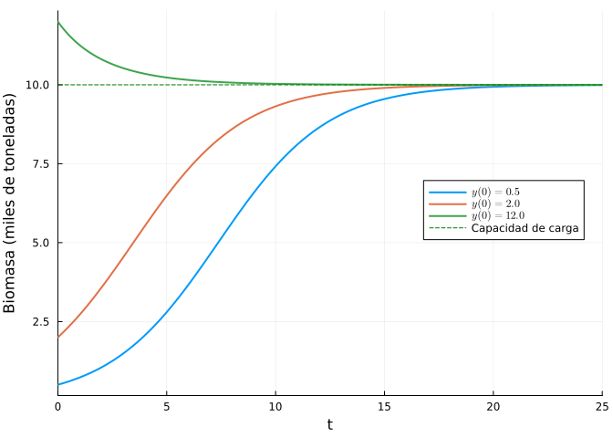
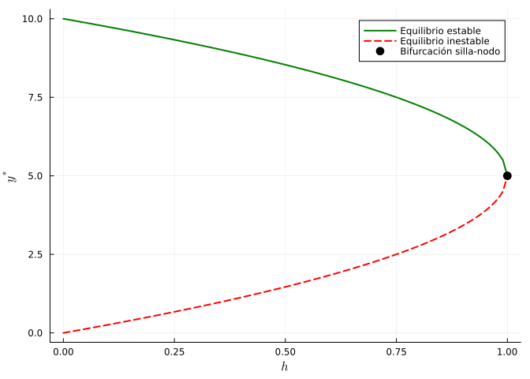
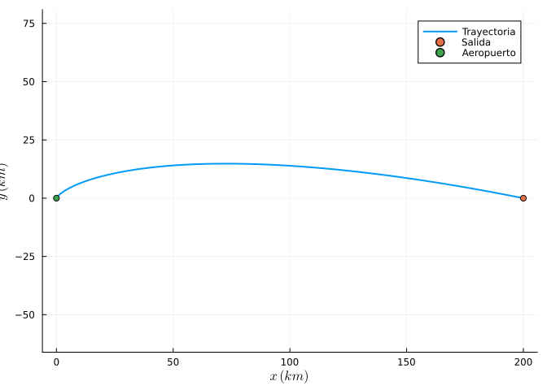
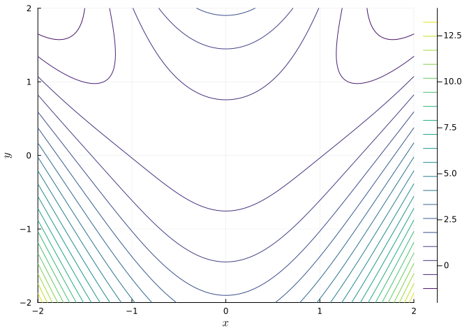
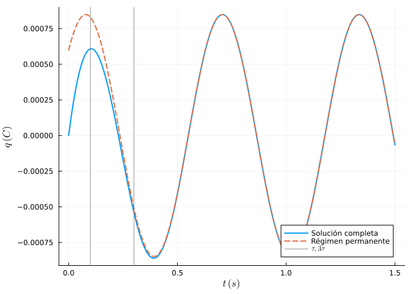
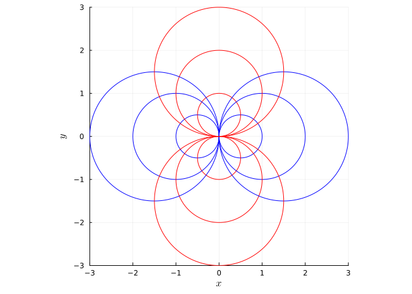

1 Ecuaciones diferenciales de primer orden
Una ecuación diferencial ordinaria de primer orden es una ecuación de la forma
\[ y' = f(t, y), \]
donde \(y(t)\) es una función desconocida de la variable independiente \(t\). En este capítulo se estudia la geometría de estas ecuaciones (campos de direcciones, puntos de equilibrio, líneas de fases, curvas integrales y bifurcaciones) y los métodos analíticos clásicos de resolución (variables separables, homogéneas, exactas, factores integrantes, lineales y de Bernoulli), con aplicaciones geométricas, físicas y de finanzas.
1.1 Ejercicios resueltos
Para la realización de esta práctica se requieren los siguientes paquetes:
using SymPyPythonCall # Cálculo simbólico y resolución exacta de EDOs.
using Plots # Dibujo de gráficas.
using CairoMakie # Dibujo de gráficas.
using DifferentialEquations # Resolución numérica de EDOs.
using LaTeXStrings # Código LaTeX en los gráficos.
using Roots # Cálculo de raíces (puntos de equilibrio).
NotaVersiones de Julia y de los paquetes utilizados
Status `~/.julia/environments/v1.12/Project.toml` ⌃ [13f3f980] CairoMakie v0.15.9 [0c46a032] DifferentialEquations v8.0.2 [b964fa9f] LaTeXStrings v1.4.0 [91a5bcdd] Plots v1.41.6 [f2b01f46] Roots v3.0.6 [bc8888f7] SymPyPythonCall v0.5.1 Info Packages marked with ⌃ have new versions available and may be upgradable.
A lo largo del capítulo usaremos las siguientes funciones auxiliares para dibujar campos de direcciones de la ecuación \(y'=f(t,y)\):
function campo_direcciones_plot(f, ts, ys; escala = 0.4, kwargs...)
T = [t for y in ys for t in ts]
Y = [y for y in ys for t in ts]
V = f.(T, Y)
r = (maximum(ts) - minimum(ts)) / (maximum(ys) - minimum(ys)) # Relación entre los rangos de los ejes.
dx = escala / 2 ./ sqrt.(1 .+ (V .* r) .^ 2) # Corregimos la pendiente con r para que todos los
dy = V .* dx # segmentos se vean del mismo tamaño en el gráfico.
Xs = reduce(vcat, [[t - dxi, t + dxi, NaN] for (t, dxi) in zip(T, dx)])
Ys = reduce(vcat, [[y - dyi, y + dyi, NaN] for (y, dyi) in zip(Y, dy)])
Plots.plot(Xs, Ys, color = :gray, alpha = 0.7, label = ""; kwargs...)
end;using CairoMakie
function campo_direcciones_makie!(ax, f, ts, ys; escala = 0.4, kwargs...)
T = [t for y in ys for t in ts]
Y = [y for y in ys for t in ts]
V = f.(T, Y)
r = (maximum(ts) - minimum(ts)) / (maximum(ys) - minimum(ys)) # Relación entre los rangos de los ejes.
dx = escala / 2 ./ sqrt.(1 .+ (V .* r) .^ 2) # Corregimos la pendiente con r para que todos los
dy = V .* dx # segmentos se vean del mismo tamaño en el gráfico.
segs = reduce(vcat, [[Point2f(t - dxi, y - dyi), Point2f(t + dxi, y + dyi)]
for (t, y, dxi, dyi) in zip(T, Y, dx, dy)])
Makie.linesegments!(ax, segs; color = (:gray, 0.7), kwargs...)
end;Ejercicio 1.1 Enfriamiento de un café (ley de Newton). La temperatura \(y(t)\) (en °C) de una taza de café en una habitación a \(20\) °C obedece la ley de enfriamiento de Newton
\[ y' = -0.5\,(y - 20), \]
con el tiempo \(t\) medido en minutos.
Resolver simbólicamente la ecuación con la condición inicial \(y(0)=90\).
NotaAyudaUsar la función
dsolvedel paqueteSymPyPythonCallcon el argumentoicspara imponer la condición inicial, y la funciónsolvepara despejar el instante pedido.TipSoluciónLa ecuación es lineal (y separable).
using SymPyPythonCall @syms t y() eq = Eq(diff(y(t), t), -1//2 * (y(t) - 20)) sol = dsolve(eq, y(t), ics = Dict(y(0) => 90))\(y{\left(t \right)} = 20 + 70 e^{- \frac{t}{2}}\)
Resolver numéricamente la ecuación con la condición inicial \(y(0)=90\), para valores de \(t\) entre \(0\) y \(10\) minutos y dibujar la solución.
NotaAyudaUsar la función
ODEProblemdel paqueteDifferentialEquationspara definir un problema del valor inicial y la funciónsolvepara obtener la solución numérica.La función
ODEProblemrecibe como primer argumento una funciónf(y, p, t)que define la ecuación \(y' = f(y, p, t)\), dondeyes la variable dependiente (la incógnita),tes la variable independiente ypes un vector de parámetros. El segundo argumento es el valor inicialy0, y el tercer argumento es el intervalo de integración(t0, tf).TipSoluciónusing DifferentialEquations f(t, y) = -0.5 * (y - 20) prob = ODEProblem((y, p, t) -> f(t, y), 90.0, (0.0, 10.0)) sol2 = solve(prob) Plots.plot(sol2, lw = 2, xlab = "Tiempo (min)", ylab = "Temperatura (°C)")
¿Qué temperatura tendrá el café a los 2 minutos?
TipSoluciónN(rhs(sol)(2))\(- y e^{y} + 40 + \frac{140}{e}\)
A los 2 minutos, la temperatura del café será de aproximadamente 45.8 °C.
¿Cuánto tarda el café en alcanzar los 30 ºC?
TipSoluciónN(solve(rhs(sol) - 30)[1])\(- y e^{y} + 2 \log{\left(49 \right)}\)
Dibujar el campo de direcciones de la ecuación en la región \([0,10]\times[0,100]\) junto con las curvas integrales correspondientes a \(y(0)=90\), \(y(0)=60\), \(y(0)=35\), \(y(0)=20\) e \(y(0)=5\). ¿Qué se observa?
NotaAyudaUsar la función
campo_direccionesdefinida al principio de la práctica y superponer las soluciones numéricas de varios problemas de valor inicial obtenidas conODEProblemysolvedel paqueteDifferentialEquations.TipSoluciónusing Plots, DifferentialEquations f(t, y) = -0.5 * (y - 20) plt = campo_direcciones_plot(f, 0:0.5:10, 0:5:100, xlab = "Tiempo (min)", ylab = "Temperatura (°C)", legend = true, size = (600, 450)) # Curvas integrales para distintas temperaturas iniciales. for y0 in [90, 60, 35, 20, 5] prob = ODEProblem((y, p, t) -> f(t, y), float(y0), (0.0, 10.0)) sol = solve(prob) Plots.plot!(plt, sol, lw = 2, label = L"y(0)=%$y0") end plt
using CairoMakie, DifferentialEquations f(t, y) = -0.5 * (y - 20) fig = Figure() ax = Axis(fig[1, 1], xlabel = "Tiempo (min)", ylabel = "Temperatura (°C)", limits = ((0, 10), (0, 100))) campo_direcciones_makie!(ax, f, 0:0.5:10, 0:5:100, escala = 0.4) # Curvas integrales para distintas temperaturas iniciales. for y0 in [90, 60, 35, 20, 5] prob = ODEProblem((y, p, t) -> f(t, y), float(y0), (0.0, 10.0)) sol = solve(prob) Makie.lines!(ax, sol.t, sol.u, linewidth = 2, label = L"y(0)=%$y0") end fig┌ Warning: Found `resolution` in the theme when creating a `Scene`. The `resolution` keyword for `Scene`s and `Figure`s has been deprecated. Use `Figure(; size = ...` or `Scene(; size = ...)` instead, which better reflects that this is a unitless size and not a pixel resolution. The key could also come from `set_theme!` calls or related theming functions. └ @ Makie ~/.julia/packages/Makie/kJl0u/src/scenes.jl:264

Todas las curvas integrales tienden a la temperatura ambiente \(y=20\): el campo de direcciones “empuja” cualquier solución hacia la recta horizontal \(y=20\), que es un punto de equilibrio estable.
Ejercicio 1.2 Dinámica de una población de peces. La biomasa \(y(t)\) (en miles de toneladas) de una población de atunes sigue el modelo logístico
\[ y' = 0.4\, y\left(1 - \frac{y}{10}\right), \]
con \(t\) en años.
Calcular los puntos de equilibrio, clasificar su estabilidad y dibujar la línea de fases.
NotaAyudaLos puntos de equilibrio son las raíces de \(f(y)=0.4y(1-y/10)\). Un equilibrio \(y^*\) es estable si \(f'(y^*)<0\) e inestable si \(f'(y^*)>0\). La línea de fases puede representarse dibujando \(f(y)\) frente a \(y\) y marcando el signo de \(f\).
TipSoluciónusing SymPyPythonCall @syms u fexpr = 0.4 * u * (1 - u / 10) equilibrios = solve(fexpr, u)\(\left[\begin{smallmatrix}0.0\\10.0\end{smallmatrix}\right]\)
dfdu = diff(fexpr, u) [(y0, dfdu(u => y0)) for y0 in equilibrios]2-element Vector{Tuple{Sym{PythonCall.Py}, Sym{PythonCall.Py}}}: (0.0, 0.400000000000000) (10.0000000000000, -0.400000000000000)Como \(f'(0)=0.4>0\), el equilibrio \(y^*=0\) es inestable (extinción repulsora), y como \(f'(10)=-0.4<0\), el equilibrio \(y^*=10\) (la capacidad de carga) es estable. Dibujamos \(f(y)\) y la línea de fases:
using Plots, LaTeXStrings fnum(y) = 0.4y * (1 - y / 10) Plots.plot(fnum, -1, 12, lw = 2, label = L"f(y)", xlab = L"y", ylab = L"y'") hline!([0], color = :black, label = "") Plots.scatter!([0], [0], color = :red, ms = 6, label = "Inestable") Plots.scatter!([10], [0], color = :green, ms = 6, label = "Estable") # Flechas de la línea de fases sobre el eje horizontal. Plots.plot!([2, 4], [0, 0], arrow = true, lw = 3, color = :blue, label = "") Plots.plot!([12, 11], [0, 0], arrow = true, lw = 3, color = :blue, label = "") Plots.plot!([-1, -0.5], [0, 0], arrow = :head, lw = 3, color = :blue, label = "")
En \(0<y<10\) se tiene \(f(y)>0\) y la biomasa crece hacia 10; en \(y>10\), \(f(y)<0\) y decrece hacia 10. Cualquier población inicial positiva tiende a las 10 mil toneladas.
Comprobar la conclusión anterior dibujando las soluciones numéricas con condiciones iniciales \(y(0)=0.5, 2, 12\).
TipSoluciónusing DifferentialEquations plt = Plots.plot(xlab = "Tiempo", ylab = "Biomasa (miles de toneladas)", legend = :right) for y0 in [0.5, 2.0, 12.0] prob = ODEProblem((y, p, t) -> fnum(y), y0, (0.0, 25.0)) Plots.plot!(plt, solve(prob), lw = 2, label = L"y(0)=%$y0") end hline!(plt, [10], ls = :dash, color = :green, label = "Capacidad de carga") plt
Las tres soluciones convergen a \(y=10\), como predice la línea de fases.
Ejercicio 1.3 Bifurcación en una pesquería con capturas. Si sobre la población del ejercicio anterior se pesca a un ritmo constante de \(h\) miles de toneladas al año, el modelo pasa a ser
\[ y' = 0.4\,y\left(1-\frac{y}{10}\right) - h. \]
Calcular los puntos de equilibrio en función de \(h\) y determinar el valor crítico \(h^*\) a partir del cual la población colapsa (bifurcación silla-nodo).
NotaAyudaResolver simbólicamente \(0.4y(1-y/10)-h=0\) con
solvedeSymPy. Los equilibrios existen mientras el discriminante sea no negativo.TipSoluciónusing SymPyPythonCall @syms u h::positive equilibrios = solve(0.4 * u * (1 - u / 10) - h, u)\(\left[\begin{smallmatrix}5.0 - 5.0 \sqrt{1.0 - h}\\5.0 \sqrt{1.0 - h} + 5.0\end{smallmatrix}\right]\)
Los equilibrios son \(y^*_\pm = 5 \pm 5\sqrt{1 - h}\). Existen dos equilibrios (uno estable, \(y^*_+\), y otro inestable, \(y^*_-\)) si \(h<1\), se funden en uno solo si \(h=1\) y desaparecen si \(h>1\):
hcrit = solve(1 - h, h)\(\left[\begin{smallmatrix}1\end{smallmatrix}\right]\)
El valor crítico es \(h^*=1\) (mil toneladas/año), que coincide con el máximo de la producción logística \(\max_y 0.4y(1-y/10) = 0.4\cdot 10/4 = 1\). Si se pesca por encima del rendimiento máximo sostenible, \(y'<0\) para todo \(y\) y la población se extingue en tiempo finito.
Dibujar el diagrama de bifurcación (equilibrios \(y^*\) frente al parámetro \(h\)).
TipSoluciónhs = 0:0.01:1 yplus = 5 .+ 5 .* sqrt.(1 .- hs) yminus = 5 .- 5 .* sqrt.(1 .- hs) Plots.plot(hs, yplus, lw = 2, color = :green, label = "Equilibrio estable", xlab = L"h", ylab = L"y^*") Plots.plot!(hs, yminus, lw = 2, ls = :dash, color = :red, label = "Equilibrio inestable") Plots.scatter!([1], [5], color = :black, ms = 6, label = "Bifurcación silla-nodo")
Las dos ramas de equilibrios se unen en \((h^*, y^*)=(1,5)\) y desaparecen: es una bifurcación silla-nodo. Este diagrama muestra por qué las cuotas de pesca deben fijarse con margen de seguridad respecto a \(h^*\).
Ejercicio 1.4 Variables separables: datación por carbono-14. La cantidad \(y(t)\) de \(^{14}\)C en un resto orgánico satisface \(y' = -\lambda y\) con \(\lambda = \ln 2/5730\) años\(^{-1}\) (semivida de 5730 años).
En 1991 se descubrió en los Alpes la momia de Ötzi, cuyos tejidos conservaban aproximadamente el \(53\%\) del \(^{14}\)C original. Resolver la ecuación por separación de variables y estimar la antigüedad de la momia.
NotaAyuda
Separar variables: \(\frac{dy}{y} = -\lambda\, dt\), integrar ambos miembros con integrate de SymPy y despejar. Comprobar el resultado con dsolve.
TipSolución
Separando variables e integrando, \(\ln y = -\lambda t + C\), luego \(y(t)=y_0 e^{-\lambda t}\). Reproducimos el proceso simbólicamente:
@syms t y() λ::positive y0::positive
# Comprobación directa con dsolve:
sol = dsolve(Eq(diff(y(t), t), -λ * y(t)), y(t), ics = Dict(y(0) => y0))\(y{\left(t \right)} = y_{0} e^{- t λ}\)
Imponemos \(y(t)/y_0 = 0.53\) con \(\lambda = \ln 2/5730\):
λv = log(Sym(2)) / 5730
edad = solve(Eq(exp(-λv * t), Sym(53) / 100), t)[1]
N(edad)\(- y e^{y} + 2 \log{\left(\left(\frac{100}{53}\right)^{\frac{5730}{\log{\left(2 \right)}}} \right)}\)
La momia tiene una antigüedad de unos 5250 años, en excelente acuerdo con la datación arqueológica de Ötzi (≈ 5300 años).
Ejercicio 1.5 Ecuación homogénea: trayectoria de un avión con viento. Un avión parte del punto \((a, 0) = (200, 0)\) km y vuela siempre apuntando hacia el aeropuerto situado en el origen con velocidad \(v_0=250\) km/h, mientras sopla un viento hacia el norte de velocidad \(w=50\) km/h. Su trayectoria \(y(x)\) satisface la ecuación homogénea
\[ y' = \frac{y - k\sqrt{x^2+y^2}}{x}, \qquad k = \frac{w}{v_0} = 0.2. \]
Comprobar que la ecuación es homogénea y resolverla con el cambio \(y = ux\).
NotaAyudaUna ecuación \(y'=f(x,y)\) es homogénea si \(f(\lambda x,\lambda y) = f(x, y)\). Con el cambio \(y=ux\) se obtiene una ecuación de variables separables en \(u\) y \(x\). Puede resolverse directamente con
dsolvey comprobar que la solución es \(y = \frac{a}{2}\left[\left(\frac{x}{a}\right)^{1-k} - \left(\frac{x}{a}\right)^{1+k}\right]\).TipSoluciónCon \(x>0\), \(f(\lambda x, \lambda y) = \frac{\lambda y - k\lambda\sqrt{x^2+y^2}}{\lambda x} = f(x,y)\), luego es homogénea. Con \(y=ux\), \(y'=u+xu'\) y la ecuación queda \(x u' = -k\sqrt{1+u^2}\), separable:
\[ \int \frac{du}{\sqrt{1+u^2}} = -k \int \frac{dx}{x} \;\Rightarrow\; \operatorname{arcsinh}(u) = -k \ln x + C. \]
Resolvemos simbólicamente y aplicamos la condición inicial \(y(200)=0\):
using SymPyPythonCall @syms x::positive y() k, a = Sym(1)/5, 200 eq = Eq(diff(y(x), x), (y(x) - k * sqrt(x^2 + y(x)^2)) / x) sol = dsolve(eq, y(x), ics = Dict(y(a) => 0)) simplify(rhs(sol))\(- x \sinh{\left(\frac{\log{\left(x \right)}}{5} - \frac{\log{\left(200 \right)}}{5} \right)}\)
La trayectoria es \(y(x) = \frac{a}{2}\left[\left(\frac{x}{a}\right)^{1-k} - \left(\frac{x}{a}\right)^{1+k}\right] = 100\left[\left(\frac{x}{200}\right)^{0.8} - \left(\frac{x}{200}\right)^{1.2}\right]\).
Dibujar la trayectoria. ¿Llega el avión al aeropuerto? ¿Cuál es la máxima desviación hacia el norte?
TipSolucióntraj(x) = 100 * ((x / 200)^0.8 - (x / 200)^1.2) Plots.plot(traj, 0, 200, lw = 2, label = "Trayectoria", aspect_ratio = :equal, xlab = L"x \; (km)", ylab = L"y \; (km)") Plots.scatter!([200], [0], label = "Salida"); Plots.scatter!([0], [0], label = "Aeropuerto")
using Roots # Máxima desviación: xmax = find_zero(x -> 0.8 * (x/200)^(-0.2) - 1.2 * (x/200)^0.2, 100) / 200 |> u -> 200u (xmax, traj(xmax))(72.57747386024232, 14.814814814814808)Como \(k<1\), \(y(x)\to 0\) cuando \(x\to 0^+\): el avión sí llega al origen (si fuera \(k\ge 1\), el viento le impediría llegar). La desviación máxima es de unos \(27\) km hacia el norte, alcanzada en \(x \approx 73\) km.
Ejercicio 1.6 Ecuación exacta: curvas de energía en mecánica. Las órbitas de un oscilador no lineal en el plano \((x, y)\) (posición–velocidad) satisfacen
\[ (x^3 - 2xy)\,dx + (y - x^2)\,dy = 0. \]
Comprobar que la ecuación es exacta y hallar la familia de curvas integrales \(F(x,y)=C\).
NotaAyudaLa ecuación \(M\,dx + N\,dy = 0\) es exacta si \(\partial M/\partial y = \partial N/\partial x\). En tal caso \(F(x, y) = \int M\, dx + g(y)\), donde \(g\) se determina imponiendo \(\partial F/\partial y = N\). Usar
diffeintegratedeSymPy.TipSoluciónusing SymPyPythonCall @syms x y M = x^3 - 2x * y N = y - x^2 diff(M, y) == diff(N, x)trueAmbas derivadas cruzadas valen \(-2x\): la ecuación es exacta. Construimos el potencial:
F = integrate(M, x) # F = x⁴/4 − x²y + g(y) g = integrate(N - diff(F, y), y) F = F + g\(\frac{x^{4}}{4} - x^{2} y + \frac{y^{2}}{2}\)
Las curvas integrales son
\[ F(x, y) = \frac{x^4}{4} - x^2 y + \frac{y^2}{2} = C. \]
Dibujar varias curvas de nivel de \(F\) en \([-2,2]\times[-2,2]\).
TipSoluciónFnum(x, y) = x^4 / 4 - x^2 * y + y^2 / 2 xs = ys = range(-2, 2, length = 300) Plots.contour(xs, ys, Fnum, levels = 20, xlab = L"x", ylab = L"y", color = :viridis, cbar = true)
Las curvas de nivel de \(F\) (la “energía” del sistema) son las curvas integrales de la ecuación: la solución que pasa por cada punto es la curva de nivel que lo contiene.
Ejercicio 1.7 Factor integrante. La ecuación
\[ y\,dx + (2x - y e^{y})\,dy = 0 \]
no es exacta. Hallar un factor integrante de la forma \(\mu(y)\), resolver la ecuación y comprobar el resultado con dsolve.
NotaAyuda
Si \(\dfrac{\partial N/\partial x - \partial M/\partial y}{M}\) depende solo de \(y\), entonces \(\mu(y) = e^{\int \frac{N_x - M_y}{M}\,dy}\) es un factor integrante.
TipSolución
@syms x y
M = y
N = 2x - y * exp(y)
cociente = simplify((diff(N, x) - diff(M, y)) / M)\(\frac{1}{y}\)
El cociente vale \(1/y\), que depende solo de \(y\), luego
μ = exp(integrate(cociente, y))\(y\)
es decir, \(\mu(y)=y\). Multiplicando la ecuación por \(\mu\), queda \(y^2\,dx + (2xy - y^2 e^y)\,dy = 0\), que ya es exacta:
M2, N2 = μ * M, μ * N
diff(M2, y) == diff(N2, x)trueF = integrate(M2, x)
F = F + integrate(N2 - diff(F, y), y) |> simplify\(x y^{2} + \left(- y^{2} + 2 y - 2\right) e^{y}\)
La solución general es \(x y^2 - (y^2 - 2y + 2)e^y = C\). Comprobación con dsolve (tratando \(x\) como función de \(y\), pues la ecuación es lineal en \(x\)):
@syms t x()
sol = dsolve(Eq(diff(x(t), t), (t * exp(t) - 2x(t)) / t), x(t))
simplify(rhs(sol))\(\frac{C_{1} + t^{2} e^{t} - 2 t e^{t} + 2 e^{t}}{t^{2}}\)
Despejando se recupera la misma familia de curvas.
Ejercicio 1.8 Ecuación lineal: circuito RC. En un circuito RC en serie con resistencia \(R = 1000\ \Omega\), condensador de capacidad \(C=10^{-4}\) F y fuente de tensión alterna \(E(t) = 12\cos(10 t)\) V, la carga \(q(t)\) del condensador satisface la ecuación lineal
\[ R\,q' + \frac{q}{C} = E(t) \quad\Longleftrightarrow\quad q' + 10\,q = 0.012\cos(10 t). \]
Resolver la ecuación con \(q(0)=0\) usando el método del factor integrante y separar la solución en régimen transitorio y régimen permanente.
NotaAyudaPara la ecuación lineal \(q' + a q = b(t)\), el factor integrante es \(\mu(t)=e^{at}\) y la solución es \(q(t)=e^{-at}\left(\int e^{at} b(t)\,dt + C\right)\). Resolver con
dsolvey usarexpandycollectpara identificar los términos que decaen.TipSoluciónusing SymPyPythonCall @syms t q() eq = Eq(diff(q(t), t) + 10 * q(t), Sym(12)/1000 * cos(10t)) sol = dsolve(eq, q(t), ics = Dict(q(0) => 0)) qsol = simplify(rhs(sol))\(\frac{3 \sqrt{2} \sin{\left(10 t + \frac{\pi}{4} \right)}}{5000} - \frac{3 e^{- 10 t}}{5000}\)
La solución es
\[ q(t) = \underbrace{-\,0.0006\, e^{-10 t}}_{\text{transitorio}} \;+\; \underbrace{0.0006\left(\cos 10t + \sin 10t\right)}_{\text{permanente}}, \]
donde el término exponencial (la solución de la homogénea) se extingue con constante de tiempo \(\tau = RC = 0.1\) s, y el término oscilante es la respuesta forzada por la fuente.
Dibujar la solución junto con el régimen permanente y comprobar gráficamente que el transitorio desaparece en unas pocas constantes de tiempo.
TipSoluciónqnum = lambdify(qsol, (t,)) qperm(t) = 0.0006 * (cos(10t) + sin(10t)) Plots.plot(qnum, 0, 1.5, lw = 2, label = "Solución completa", xlab = L"t \; (s)", ylab = L"q \; (C)") Plots.plot!(qperm, 0, 1.5, ls = :dash, lw = 2, label = "Régimen permanente") vline!([0.1, 0.3], color = :gray, ls = :dot, label = L"\tau, 3\tau")
A partir de \(t \approx 3\tau = 0.3\) s ambas curvas son indistinguibles: el condensador “olvida” su condición inicial.
Ejercicio 1.9 Ecuación de Bernoulli: difusión de un producto en un mercado. La cuota de mercado \(y(t)\in(0,1)\) de un nuevo producto tecnológico evoluciona según el modelo logístico
\[ y' = 0.8\,y - 0.8\,y^2, \]
que es una ecuación de Bernoulli con \(n=2\).
Resolverla mediante el cambio de variable \(v = y^{1-n} = 1/y\), con la condición inicial \(y(0) = 0.05\) (un 5 % de cuota inicial), y calcular en qué instante el producto alcanza el 50 % del mercado.
NotaAyuda
Con \(v = 1/y\) se tiene \(v' = -y'/y^2\), y la ecuación se transforma en la lineal \(v' + 0.8v = 0.8\). Resolverla y deshacer el cambio. Comprobar con dsolve aplicado a la ecuación original.
Ejercicio 1.10 Aplicación financiera: plan de ahorro con capitalización continua. Un inversor abre un plan de pensiones con una aportación inicial de \(A(0) = 10\,000\) € y aporta de forma continua \(d = 6\,000\) €/año. El fondo se revaloriza a un tipo de interés continuo del \(r = 5\%\) anual, de modo que
\[ A' = 0.05\,A + 6000. \]
Resolver la ecuación y calcular el capital acumulado a los 30 años. ¿Qué parte procede de las aportaciones y qué parte de los intereses?
NotaAyudaEs una ecuación lineal con coeficientes constantes; resolver con
dsolvey evaluar en \(t=30\). Las aportaciones totales son \(A(0) + 30d\).TipSoluciónusing SymPyPythonCall @syms t A() sol = dsolve(Eq(diff(A(t), t), Sym(5)/100 * A(t) + 6000), A(t), ics = Dict(A(0) => 10000))\(A{\left(t \right)} = 130000 e^{\frac{t}{20}} - 120000\)
Es decir, \(A(t) = 130\,000\,e^{0.05t} - 120\,000\). A los 30 años:
A30 = N(rhs(sol)(t => 30))\(- y e^{y} - 240000 + 260000 e^{\frac{3}{2}}\)
El capital final es de unos 462 600 €, de los que 190 000 € son aportaciones y unos 272 600 € son intereses: más de la mitad del capital procede de la capitalización compuesta.
¿Qué aportación anual \(d\) sería necesaria para alcanzar un millón de euros en 30 años?
TipSolución@syms d::positive solA = dsolve(Eq(diff(A(t), t), Sym(5)/100 * A(t) + d), A(t), ics = Dict(A(0) => 10000)) dreq = solve(Eq(rhs(solA)(t => 30), 1000000), d)[1]\(\frac{500 \left(-100 + e^{\frac{3}{2}}\right)}{1 - e^{\frac{3}{2}}}\)
Haría falta aportar unos 14 100 €/año (unos 1175 €/mes).
Ejercicio 1.11 Aplicación geométrica: trayectorias ortogonales. En electrostática, las líneas de campo de una carga puntual son ortogonales a las curvas equipotenciales. Las equipotenciales de un dipolo bidimensional simplificado forman la familia de circunferencias
\[ x^2 + y^2 = 2Cx. \]
Hallar la familia de trayectorias ortogonales (las líneas de campo) y dibujar ambas familias.
NotaAyuda
Derivar implícitamente la familia y eliminar la constante \(C\) para obtener la EDO \(y' = f(x,y)\) de la familia. La familia ortogonal satisface \(y' = -1/f(x,y)\). La ecuación resultante es homogénea.
TipSolución
De \(x^2+y^2 = 2Cx\) se obtiene \(C = \frac{x^2+y^2}{2x}\), y derivando implícitamente, \(2x + 2yy' = 2C\), luego
\[ y' = \frac{y^2 - x^2}{2xy}. \]
La familia ortogonal satisface la ecuación homogénea \(y' = \dfrac{2xy}{x^2 - y^2}\):
@syms x y()
sol = dsolve(Eq(diff(y(x), x), 2x * y(x) / (x^2 - y(x)^2)), y(x))\(\left[\begin{smallmatrix}y{\left(x \right)} = - \frac{\sqrt{- 4 x^{2} + e^{2 C_{1}}}}{2} + \frac{e^{C_{1}}}{2}\\y{\left(x \right)} = \frac{\sqrt{- 4 x^{2} + e^{2 C_{1}}}}{2} + \frac{e^{C_{1}}}{2}\end{smallmatrix}\right]\)
Reordenando la solución implícita se obtiene \(x^2 + y^2 = 2Ky\): las líneas de campo son circunferencias centradas en el eje \(y\) y que pasan por el origen, ortogonales a las equipotenciales (circunferencias centradas en el eje \(x\) por el origen). Dibujamos ambas familias:
plt = Plots.plot(aspect_ratio = :equal, legend = false, xlab = L"x", ylab = L"y", xlims = (-3, 3), ylims = (-3, 3))
θ = range(0, 2π, length = 200)
for c in [0.5, 1, 1.5]
Plots.plot!(plt, c .+ c .* cos.(θ), c .* sin.(θ), color = :blue) # Equipotenciales
Plots.plot!(plt, -c .+ c .* cos.(θ), c .* sin.(θ), color = :blue)
Plots.plot!(plt, c .* cos.(θ), c .+ c .* sin.(θ), color = :red) # Líneas de campo
Plots.plot!(plt, c .* cos.(θ), -c .+ c .* sin.(θ), color = :red)
end
plt
En cada intersección, una circunferencia azul y una roja se cortan en ángulo recto.
1.2 Ejercicios propuestos
Ejercicio 1.12 Medicina forense. Un cadáver se encuentra a 30 °C en una habitación a 21 °C; una hora más tarde su temperatura es de 28 °C. Suponiendo la ley de enfriamiento de Newton y temperatura corporal normal de 36.5 °C, estimar la hora de la muerte.
Ejercicio 1.13 Ingeniería química. Un tanque contiene 500 L de salmuera con 5 kg de sal. Entra agua con 0.02 kg/L de sal a 10 L/min y la mezcla sale al mismo ritmo. Plantear y resolver la EDO de la cantidad de sal \(y(t)\), y calcular la concentración a largo plazo.
Ejercicio 1.14 Finanzas. Una hipoteca de 250 000 € a tipo continuo del 3.5 % se amortiza con pagos continuos de \(p\) €/año: \(D' = 0.035D - p\). Calcular el pago \(p\) necesario para cancelar la deuda en 25 años y el interés total pagado.
Ejercicio 1.15 Física. Un paracaidista de 80 kg cae con rozamiento proporcional al cuadrado de la velocidad, \(mv' = mg - kv^2\) con \(k=0.27\) kg/m. Calcular la velocidad límite, resolver la ecuación (separable) y dibujar la línea de fases.
Ejercicio 1.16 Ecología. Estudiar las bifurcaciones del modelo de un insecto plaga \(y' = ry\left(1-\frac{y}{K}\right) - \frac{y^2}{1+y^2}\) con \(K=10\) fijo, en función de \(r>0\), localizando numéricamente los valores de \(r\) donde cambia el número de equilibrios.